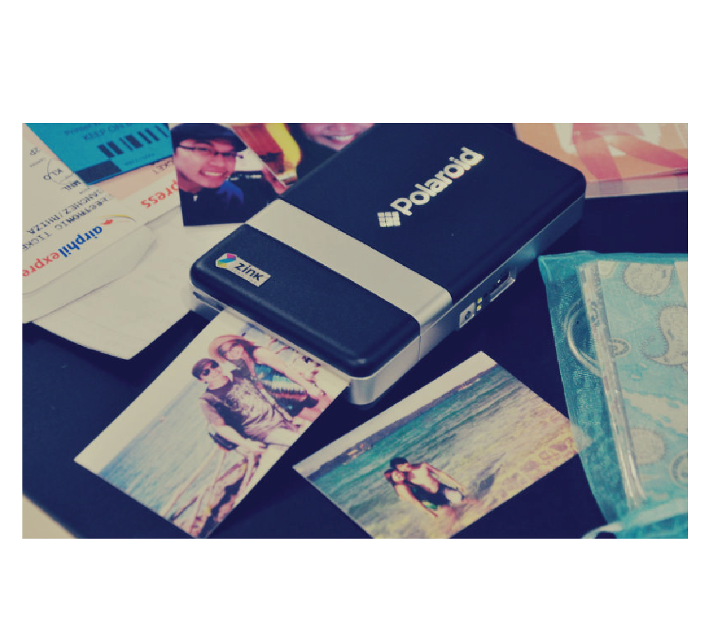

in 2008 a new company, under new management, yet with the same name emerged with a new Polaroid digital camera. The Polaroid PoGo camera no longer used the silver, multi-layered sheets of film, and instead used a new technology known as ZINK, or zero ink. The technology still uses three layers of colored sheets, this time cyan, yellow, and magenta, and this time the reagent is simply the sun. The rest of the process is exactly the same—the shutter opens with the negative in place to receive light, the paper reacts to the light, and the image begins to appear on the sheet.
Many other companies, including The Impossible Project made their own attempts at bring back the instant camera. The aformentioned company purchased the last polaroid factory and developed a way to make the classic film and cameras again. Companies like Fugi Film saw the increase in popularity of the instant camera, and thus developed their own line: Instax Mini and Wide.

Using the same technology ~ZINK~ Polaroid developed a way to turn your phone into an instant camera. The portable wireless printer became possible when the need for large and expensive ink cartridges became unecessary.